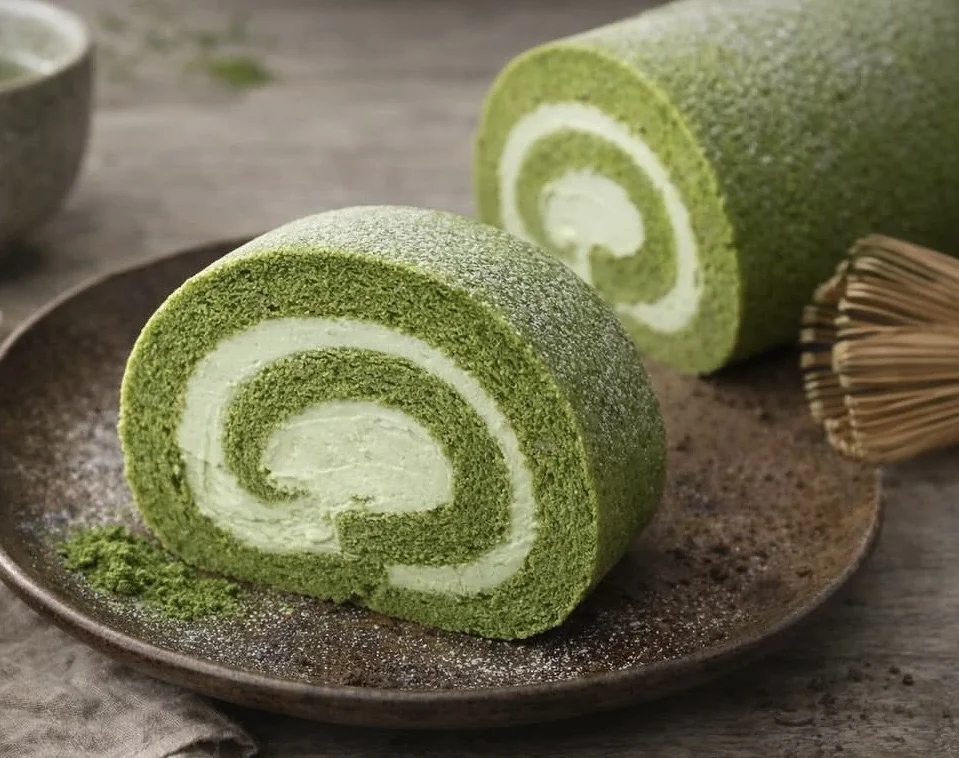
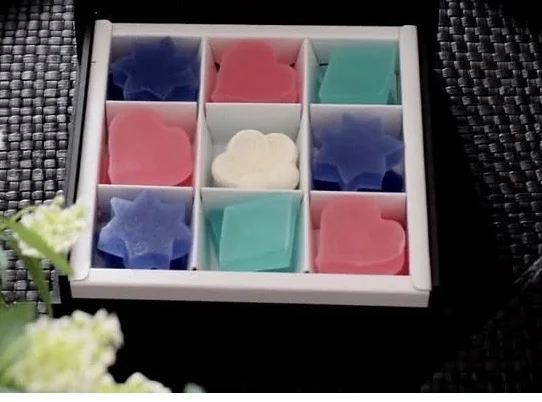

スイーツOEM・小ロット製造に関するお役立ち情報をお届けします。

定期発注を考え始めるタイミング、頻度や数量の決め方、パッケージとの相性など、検討時に整理しておきたいポイントを解説します。

パッケージ・ロゴ入れは段階に分けて考えられます。検討のタイミングや準備しておくとスムーズなことを解説します。

最小ロットは何によって決まるのか。原材料・製造バッチ・包材という3つの要素から、小ロットで依頼するときの考え方を解説します。

スイーツOEMを初めて依頼する前に整理しておきたい、商品イメージ・数量・スケジュールなど5つのポイントを解説します。